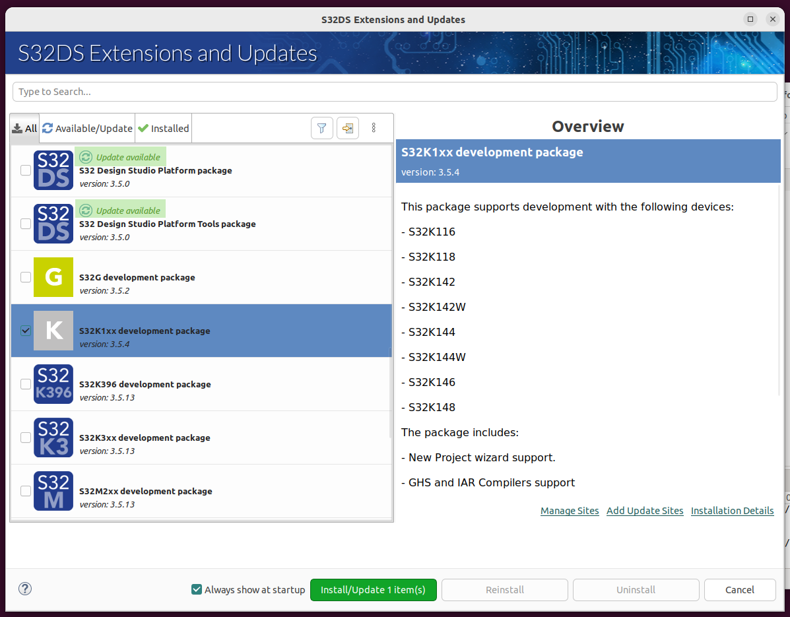
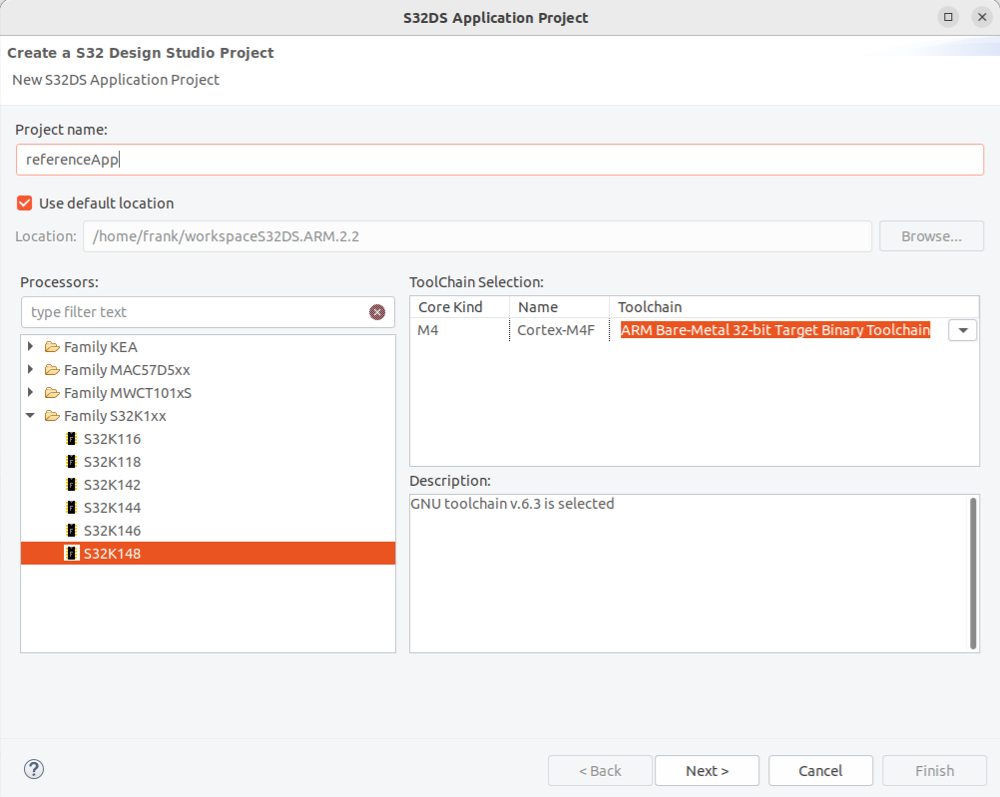
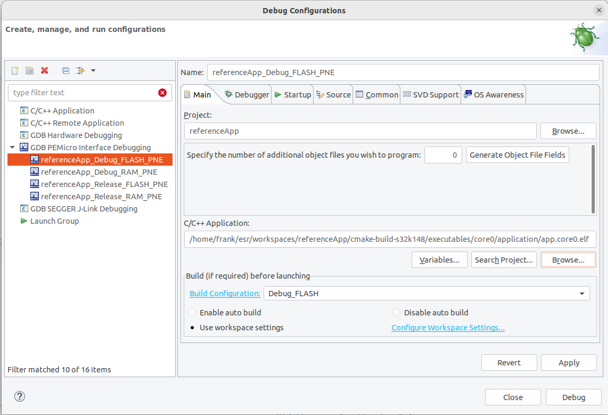
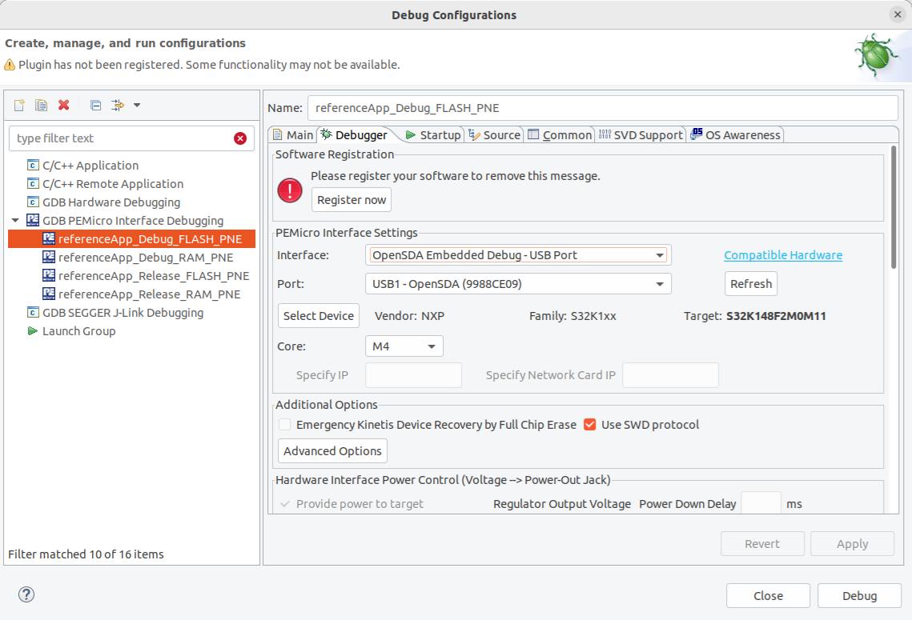
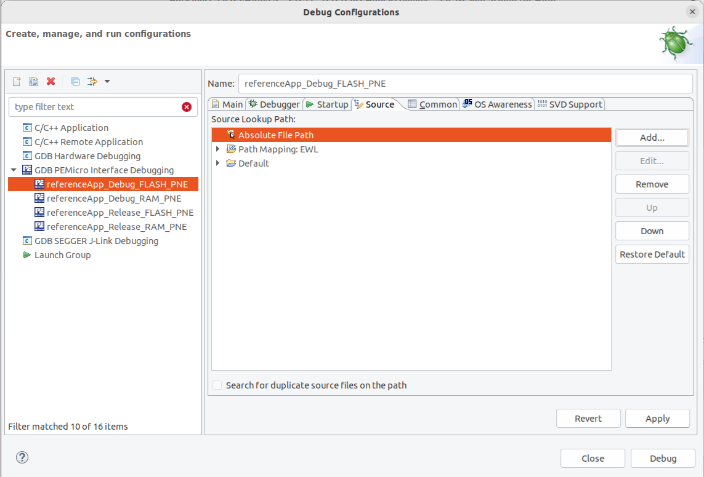

Flash, debug and test serial console on Ubuntu 22.04
NXP’s S32 Design Studio for S32 Platform can be used to flash and debug your image while it is running on the S32K148 development board.
Note: those steps are adapted from the S32 Design Studio for S32 Platform 3.5 Installation Guide. It might be useful to refer to it in case you encounter an issue, or if the steps are outdated.
Install S32 Design Studio for S32 Platform
To download and install this you will first need to register for a free account with NXP. Note that free activation codes for software you download will be sent to the email account you register with. Once registered, you can download S32 Design Studio for S32 Platform from here. Go to Downloads, and click the button next to S32 Design Studio 3.5 - Windows/Linux.
Download the linux installer S32 Design Studio for S32 Platform v.3.5. This should give you a file: S32DS.3.5_b220726_linux.x86_64.bin.
The most recent version of Ubuntu listed as supported in the linux installer’s instructions is Ubuntu 22.04.
However, it has been successfully installed on the Desktop version of Ubuntu 22.04
and the steps to achieve this are described below.
Note this assumes you have already set up the build environment described in Set up build for S32K148 platform on Ubuntu 22.04.
Install prerequisites for S32 Design Studio on Ubuntu 22.04
Install 32-bit compatibility libraries
sudo dpkg --add-architecture i386 sudo apt update sudo apt install lib32z1 libncurses5:i386 libncursesw5:i386 libstdc++6:i386 libbz2-1.0:i386 libc6:i386 libx11-6:i386 libxpm4:i386 libusb-0.1-4 libmpfr6:i386
Install TCL
sudo apt install tcl
Install S32 Design Studio on Ubuntu 22.04
With all the above prerequisites installed, your Ubuntu system is now ready to install S32 Design Studio itself. In a command shell, in the directory where you downloaded the linux installer, run it:
chmod +x S32DS.3.5_b220726_linux.x86_64.bin ./S32DS.3.5_b220726_linux.x86_64.bin
The splash screen for S32 Design Studio should appear, the installer will bring you through install options (you can leave all the install options at their default values).
Enter the activation code received by email when prompted and chose Activate Online and allow the installer to complete.
If the activation fails, one of the possible reasons for this is incorrect access permissions for the /usr/local/share/macrovision directory created by the installer when a non-default umask is set for the root user in the system. In a command shell, run the following command:
sudo chmod -R o+rx /usr/local/share/macrovision
Then repeat the activation.
Launch S32 Design Studio
You can find the launch script under <installation_path>/S32DS.3.5/s32ds.sh.
The installer should also have created a shortcut to it in a subfolder on your Ubuntu Desktop.
Execute s32ds.sh to launch the S32 Design studio.
You will be prompted with a window for installing extensions. Select S32K1xx development package. Some of the packages will be marked as Update available, two examples are highlighted in green in the following picture. Scroll through the list and select all of those. You can then click on Install/Update <n> Items(s).
{kind=link}
Flash and debug in S32 Design Studio for S32 Platform
Assuming you have a S32K148 development board and it is connected to your PC via USB, then you can flash your image on the board and debug over USB. You can create a dummy project in S32 Design Studio for ARM in the default workspace and then change it to point to the external code and the image created as described in Set up build for S32K148 platform on Ubuntu 22.04.
In S32 Design Studio choose File -> New -> S32DS Application Project, select the processor Family S32K1xx -> S32K148 and give the project a name. eg. “referenceApp“. You can leave all other settings at their default values.
In Run -> Debug Configurations find GDB PEMicro Interface Debugging-> referenceApp_Debug_FLASH_PNE. In the Main tab set the C/C++ Application to the .elf file you should have already built as described in Set up build for S32K148 platform on Ubuntu 22.04. Enter the absolute path to the .elf file:
[absolute_path_to_project_root]/build/s32k148-gcc/executables/referenceApp/application/RelWithDebInfo/app.referenceApp.elf
In the Debugger tab, in the Interface: field select
OpenSDA Embedded Debug - USB Port. The Port: field should then be populated with an instance representing the target board connected to your PC via USB. If nothing appears in the Port: field you can try pressing Refresh or power cycling your target board. If the target board is not found then you cannot continue until this is resolved.In the Source tab select Add… -> Absolute File Path.
If the above steps are successful then press the Debug button, this flashes app.referenceApp.elf to the target board and starts the debugger, it halts at the entry point in main(). At this point you can single-step through the code, or press the Resume button to run the software. Once flashed you can power-cycle the target board without the USB connection and it will run the software.
Also in the Debugger tab, you will see the GDB Client Settings Executable set to ${S32DS_GDB_ARM32_EXE}.
If you get the error:
Could not determine GDB version after sending: ~/NXP/S32DS.3.5/eclipse/../S32DS/tools/gdb-arm/arm32-eabi/bin/arm-none-eabi-gdb --versionFix this by running
sudo ln -s /usr/lib/x86_64-linux-gnu/libmpfr.so.6 /usr/lib/x86_64-linux-gnu/libmpfr.so.4
{kind=link}
{kind=link}
{kind=link}
{kind=link}
Test the Serial Console
The application running on the board uses the serial port for logging messages and to implement a command console,
which can be interacted with in parallel to debugging over the same USB cable.
This will appear as a TTY device in linux. eg. /dev/ttyACM0.
In order to test this you need serial port terminal software to connect to the COM port.
minicom is one example of such software - you can install this as follows:
sudo apt install minicom
The serial port parameters for the board with the software running are as follows:
Speed |
Data |
Parity |
Stop bits |
Flow control |
|---|---|---|---|---|
115200 |
8 bit |
None |
1 |
None |
Assuming the serial port is assigned to the device /dev/ttyACM0 then you can connect with minicom as follows:
sudo minicom -D /dev/ttyACM0 -b 115200
If the target board is powered and the software you built and flashed on the board is running then you should see output from it printed to the console,
and if you type help you should see the commands available printed out, like this:
14: RefApp: LIFECYCLE: INFO: Run level 8 14: RefApp: LIFECYCLE: INFO: Run sysadmin 14: RefApp: LIFECYCLE: DEBUG: Run sysadmin done 15: RefApp: LIFECYCLE: DEBUG: Run level 8 done 1022: RefApp: DEMO: DEBUG: Sending frame 0 2022: RefApp: DEMO: DEBUG: Sending frame 1 3022: RefApp: DEMO: DEBUG: Sending frame 2 4022: RefApp: DEMO: DEBUG: Sending frame 3 help adc - Adc Console all - Print All Adc get - startChannel ChannelNr [stopChannel ChannelNr] allx - all scaled adc can - Can system. info - print bus info send - send frame: id data[8] [send 0x123 1 2 3 4 5 6 7 8] sends to CAN_0 Frame(CanId = 0x123) help - Show all commands or specific help for a command given as parameter. in - inputs console all - print all inputs, verbose output get - get input value (param: <input-id>) allx - all inputs lc - lifecycle command reboot - reboot the system poweroff - poweroff the system level - switch to level udef - forces an undefined instruction exception pabt - forces a prefetch abort exception dabt - forces a data abort exception assert - forces an assert logger - logger settings level - get/set levels. Usage: logger level [<component>] [<new_level>] out - outputs console all - print all outputs set - set output value (param: <output-id> [0|1]) get - get output value (param: <output-id>) pwm - Set PWM all - print all channel numbers and names set - channel[0-9,0xFF=all] duty[0=off|10000=100%] setPeriod - channel[0-9] period[microsec] stats - lifecycle statistics command cpu - prints CPU statistics stack - prints stack statistics all - prints all statistics ok > 4339: RefApp: CONSOLE: INFO: Received console command "help" 4436: RefApp: CONSOLE: INFO: Console command succeeded 5022: RefApp: DEMO: DEBUG: Sending frame 4 6022: RefApp: DEMO: DEBUG: Sending frame 5
At this point, you can build the code, flash it on the board and debug it. You can now explore the code, make your own changes and learn how it works.